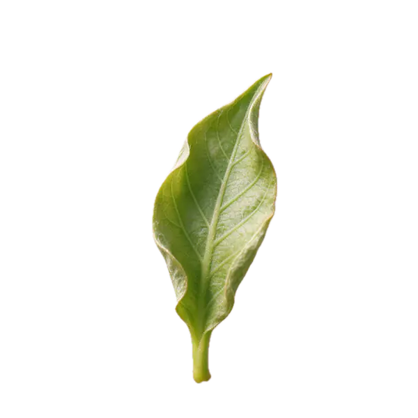
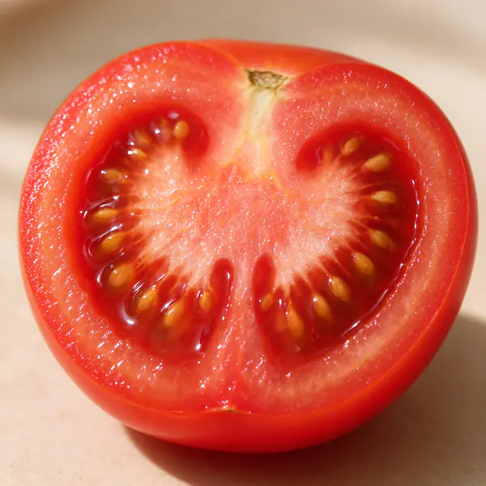
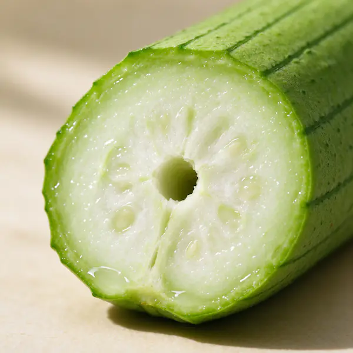
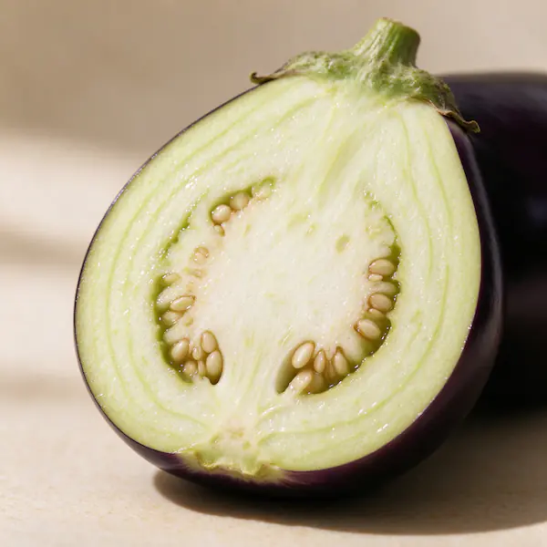
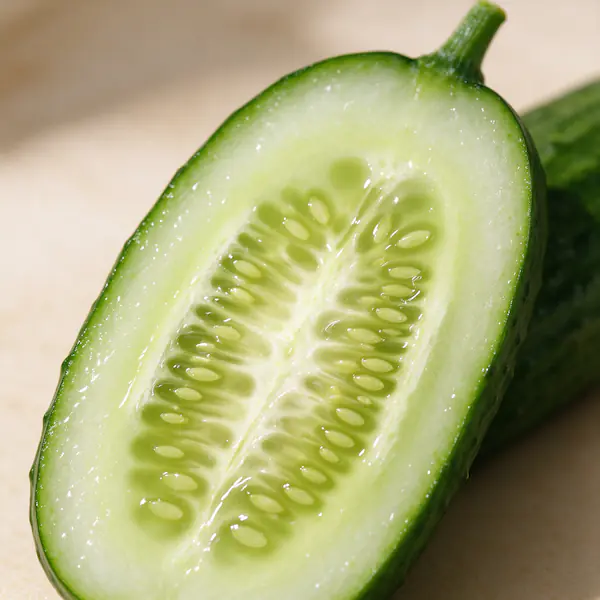
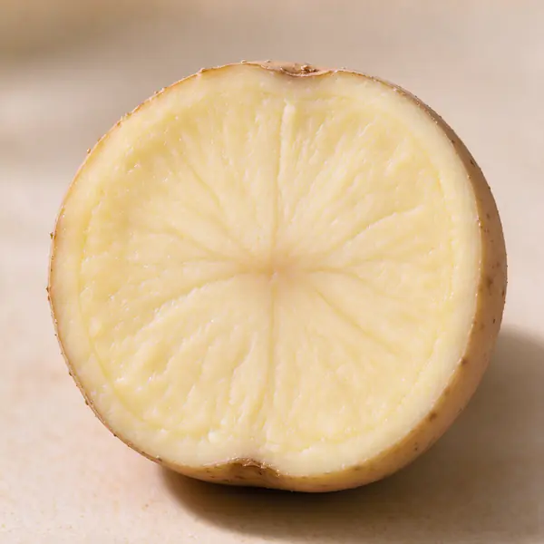
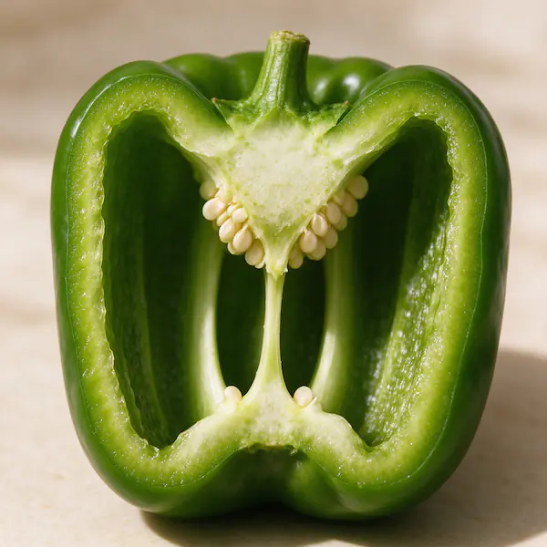
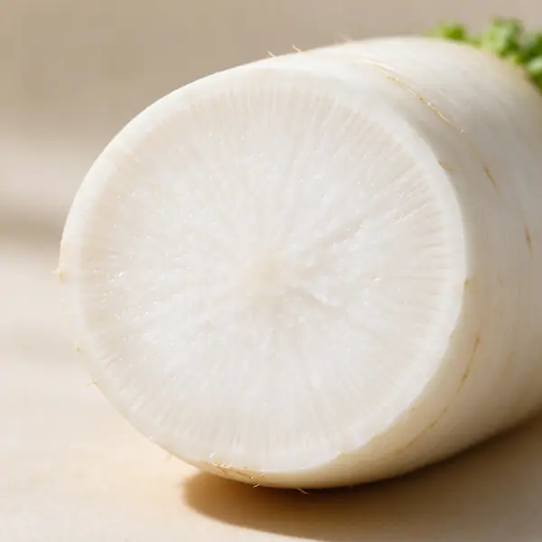
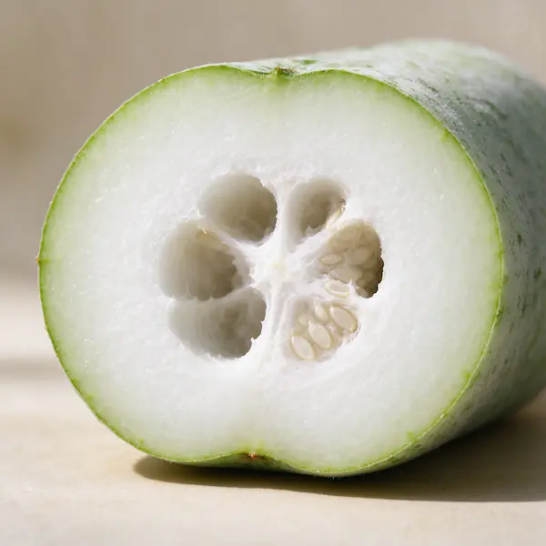
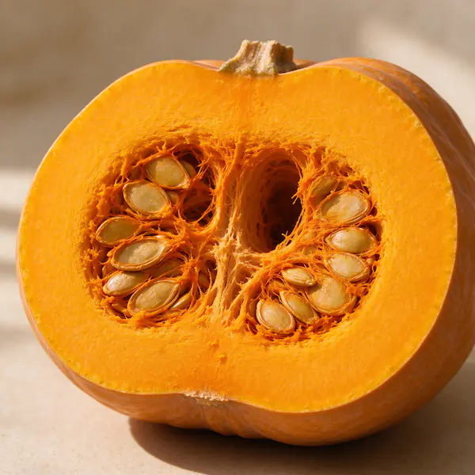

蔬菜采摘离开土壤之后，依旧会持续呼吸，自身状态也会慢慢发生变化。我们挑选的核心，就是观察这份鲜活感。
家常挑菜通用技巧：看懂蔬菜的 “鲜活状态”
挑菜有一套通用、好懂的自然规律。蔬菜从田间采摘后，并不会立刻停止生理活动，依旧会呼吸、流失水分，慢慢走向衰败。
简单来说：状态挺拔的蔬菜，就是新鲜的；状态萎靡的蔬菜，就是放久的。掌握这个核心，就能轻松挑到新鲜好菜。
一、从叶片看新鲜度
如下图所示：从左到右，叶子的状态由 嫩芽初长、新鲜成熟、持续失水、泛黄枯萎 四种自然生长状态。
可以看出，最好的状态是第二片叶子，这种完全舒展，翠绿有光泽，叶脉清晰，水分饱满。

鲜活的蔬菜，叶片色泽翠绿、自然舒展、挺拔平整，自带水润光泽，和田间正在生长的状态一致。
随着存放时间增加，蔬菜持续失水，叶片会慢慢泛黄、边缘卷曲、整体耷拉下垂，最后彻底枯萎。
果实类蔬菜同理。
新鲜的瓜果表皮饱满充盈、色泽光亮、质感水润。
长期存放后，水分不断流失，表皮会变得暗沉、发皱、干瘪，整体饱满度大幅下降。
二、看成熟度
瓜果成熟度靠手感，轻捏就能分辨。
番茄这类实心、汁水饱满的蔬果
- 重量充实、饱满微软、有弹性： 成熟度刚好，口感风味最佳，买回可直接烹饪食用；
- 整体偏硬、紧实无弹性： 尚未完全成熟，风味不足，可常温放置几天，自然后熟后再吃；
- 过度发软、按压塌陷无回弹： 熟度过盛，已经老化变质。




淀粉、厚肉型，汁水少，常带中心空腔，靠硬实度判断
- 整体偏硬、表皮干爽完整，无软烂霉斑； 新鲜；
- 变软： 已经老化变质。
如下图所示，正好与番茄类判断相反。





三、闻气味
新鲜的蔬菜，自带清爽的自然青草香、果蔬香。
如果食材带有闷味、酸味、霉味或异味，说明已经受潮、变质、不新鲜，直接避开即可。
处理
空心菜、生菜、油麦菜这类缝隙容易藏小虫、虫卵的蔬菜，可以用淡盐水浸泡 5～10分钟